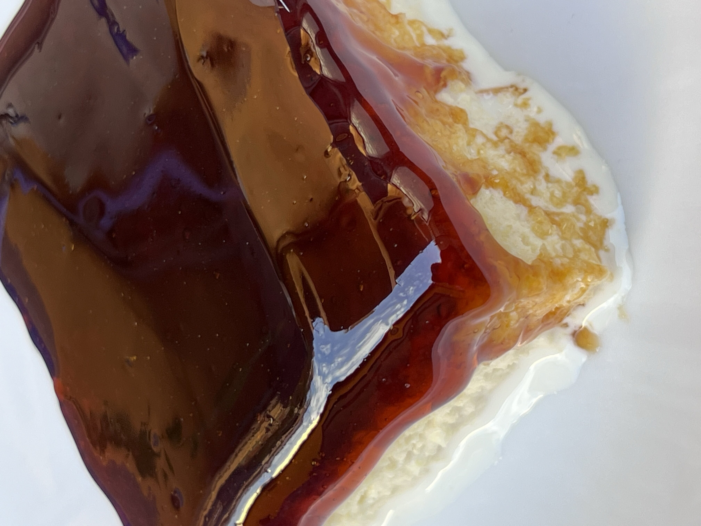

Recept za trileće

Sestavine:
PANDISPAN:
- 6 jajc
- 100g sladkorja
- 200g moke
- pol pecilnega praška
- 1 vanilijin sladkor
PRELIV:
- 400ml sladke smetane
- 300ml kondenziranega mleka
- 800ml navadnega mleka
PREMAZ:
Postopek:
- Beljake stepemo, nato postopoma dodajamo sladkor in vanilijev sladkor. Ko je masa čvrsta, dodamo rumenjake enega po enega. Na koncu počasi vmešamo moko, pomešano s pecilnim praškom (mešamo na najnižji hitrosti).
- Maso vlijemo v pekač, obložen s papirjem za peko, in pečemo 20–25 minut na 180 °C. Rahlo ohlajen biskvit prebodemo z nožem na več mestih. V pekač vlijemo sladko smetano in nanjo položimo biskvit obrnjen na glavo. Po 10 minutah prelijemo z mešanico mleka in kondenziranega mleka. Ko vpije, premažemo s karamelno kremo. Dobro ohladimo.
- Opomba: kakovostna karamelna krema je ključnega pomena. Pekač velikosti 20 × 30 cm.